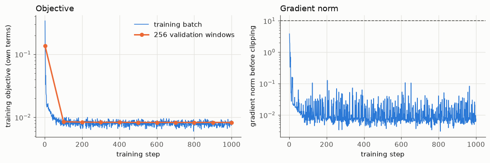
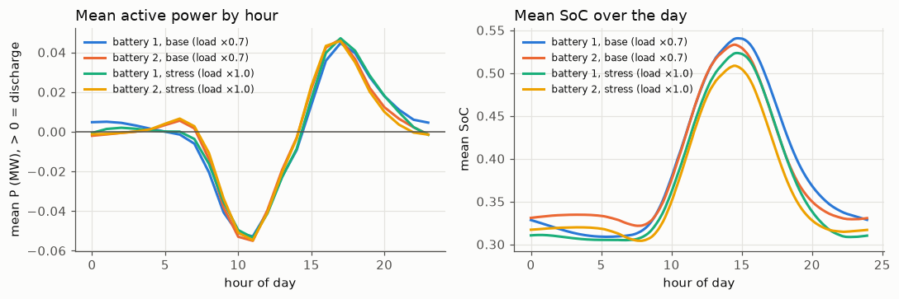

03 DPC training and the pre-specified selection#
The policy is a small MLP that maps the current state (SoC, previous voltages at the battery buses, total load, PV at the four PV buses, latest ramp rate, previous action, time of day; no forecast) to P and Q of both batteries. It is trained by backpropagation through a rollout of the differentiable grid model, with the safety layer in the loop.
Candidates differ in the terminal SoC term (weight 10, 0, 0.1, or a 30-70% dead zone). They were judged by a rule written before the check: a candidate must (a) use active power, mean |P| ≥ 0.025 MW for each battery in each regime, and (b) keep every end-of-day SoC inside 20-80%; among those, the lowest validation objective wins. The objective is the mean over valid steps of the proposal’s eq. (16) terms (losses, voltage deviation, effort, soft SoC and voltage penalties), averaged over both regimes. Evaluation is a continuous closed loop over all validation steps with 15 solver sweeps.
Read these results with the following caveats
Preliminary, validation part only. The test part is sealed and has not been evaluated. Every number comes from one network (IEEE 33-bus) and from the validation part, which was also used to select the DPC policy, so the DPC numbers are optimistically biased.
Data. Solar (Utrecht, 2014-2017) and load (Portugal, 2012-2014) are real measurements, but they come from different places and years and share no real weather. The PV size of 3.9 MW was chosen after a no-control check on the training part only (at 2.6 MW no training step exceeded 1.05 pu).
RQ2 was reworded on 2026-11-04, before any controller existed, because extreme ramps and voltage violations rarely coincide in this data (see Decisions).
Training bias. 30% of the training windows contain an extreme solar ramp.
Differences from the proposal’s eq. (16). Degradation and C-rate terms are off in every variant (“degradation off”). A terminal SoC term with a 30-70% dead zone is added and is not in eq. (16).
The safety layer goes beyond the proposal: it also limits P by the stored energy (SoC kept within 10-90%), not only by the inverter limits of eqs. (4)-(7). It does not guarantee voltage feasibility.
Active power use is marginal and not seed-robust. Voltage is regulated mostly with reactive power Q; the selected policy passes the pre-specified “P is used” threshold on 1 of 3 seeds.
The MPC baseline is a convex LinDistFlow MPC with soft voltage limits and a lossless SoC model, not the AC-OPF MPC named in the proposal, and it was not tuned. Speed comparisons are therefore against a convex MPC. The oracle MPC uses exact future data and is an upper bound, not a real controller.
Ablations. “penalty-only” includes a soft inverter-limit penalty that was added on purpose (decision D1). Variants without the safety layer can break the inverter limits; such steps are physically impossible operation and are reported as shares, not as achievable performance.
Corrections to the proposal: a discharging battery enters the net load with a minus sign, and the left side of eq. (9) is P, not 2P. Results computed before the SoC energy limit was added (2026-11-05) are superseded and not shown.
Experiment 1: horizon 24 steps (2 h)#
Source: results/m3_soc_variants_1000.json, commit 608c098 (private development history), code differed from that commit: False
No candidate passed the pre-specified rule (0 of 4), which is why Experiment 2 was added.
| candidate | objective | objective ×0.7 | objective ×1.0 | min mean |P| (MW) | (a) P used | end-of-day SoC range | (b) no drift | passes |
|---|---|---|---|---|---|---|---|---|
| weight_10 | 0.00935 | 0.00549 | 0.01322 | 0.00121 | no | 0.50 - 0.50 | yes | no |
| weight_0 | 0.00847 | 0.00468 | 0.01226 | 0.03122 | yes | 0.10 - 0.10 | no | no |
| weight_0.1 | 0.00895 | 0.00525 | 0.01265 | 0.01566 | no | 0.28 - 0.46 | yes | no |
| dead_zone_30_70 | 0.00888 | 0.00511 | 0.01264 | 0.02284 | no | 0.28 - 0.32 | yes | no |
| reference | objective | objective ×0.7 | objective ×1.0 |
|---|---|---|---|
| no_battery_action | 0.12354 | 0.01526 | 0.23183 |
| volt_var_droop (original, untuned) | 0.01507 | 0.01022 | 0.01993 |
Selected by the rule: None.
Experiment 2: horizons 72 and 144 steps (6 h and 12 h)#
Experiment 2 was added after seeing Experiment 1, in which the policy used almost no active power. Its protocol, including the same rule and thresholds, was written before any of its runs. Experiment 1 stays reported above.
Source: results/m3_exp2_soc_variants.json, commit a334306 (private development history), code differed from that commit: False
| candidate | objective | objective ×0.7 | objective ×1.0 | min mean |P| (MW) | (a) P used | end-of-day SoC range | (b) no drift | passes |
|---|---|---|---|---|---|---|---|---|
| H72_weight_10 | 0.00936 | 0.00549 | 0.01322 | 0.00056 | no | 0.50 - 0.50 | yes | no |
| H72_weight_0 | 0.00817 | 0.00446 | 0.01189 | 0.03356 | yes | 0.10 - 0.21 | no | no |
| H72_weight_0.1 | 0.00906 | 0.00530 | 0.01282 | 0.00965 | no | 0.40 - 0.50 | yes | no |
| H72_dead_zone_30_70 | 0.00876 | 0.00502 | 0.01250 | 0.02252 | no | 0.29 - 0.32 | yes | no |
| H144_weight_10 | 0.00936 | 0.00549 | 0.01322 | 0.00060 | no | 0.50 - 0.50 | yes | no |
| H144_weight_0 | 0.00808 | 0.00439 | 0.01177 | 0.03449 | yes | 0.10 - 0.19 | no | no |
| H144_weight_0.1 | 0.00906 | 0.00530 | 0.01283 | 0.00794 | no | 0.41 - 0.51 | yes | no |
| H144_dead_zone_30_70 | 0.00870 | 0.00497 | 0.01242 | 0.02504 | yes | 0.30 - 0.34 | yes | yes |
Selected by the rule: H144_dead_zone_30_70.
The selected candidate passes condition (a) narrowly: its minimum mean |P| over both batteries and both regimes is 0.02504 MW against the 0.025 MW threshold. The threshold was not changed.
Training stability#
Pre-specified rule: a run is unstable if a loss or gradient is not finite, or if the gradient norm before clipping is above 10 on more than 5% of the steps after step 100.
| candidate | unstable | max grad norm | share after step 100 above 10 | truncated rerun | minutes |
|---|---|---|---|---|---|
| H72_weight_10 | no | 9.28 | 0.00% | no | 21.6 |
| H72_weight_0 | no | 1.57 | 0.00% | no | 17.9 |
| H72_weight_0.1 | no | 1.57 | 0.00% | no | 11.9 |
| H72_dead_zone_30_70 | no | 2.91 | 0.00% | no | 11.9 |
| H144_weight_10 | no | 15.52 | 0.00% | no | 24.0 |
| H144_weight_0 | no | 2.33 | 0.00% | no | 24.1 |
| H144_weight_0.1 | no | 2.30 | 0.00% | no | 24.1 |
| H144_dead_zone_30_70 | no | 3.87 | 0.00% | no | 24.0 |
Training curve of the selected candidate (seed 0)#

Run 20261106-124919_candidate_no-deg_seed0. The training objective here includes the terminal SoC term, so it is not the same number as the selection objective above.
How the selected policy uses the battery (descriptive only)#
These diagnostics were made after the selection and cannot change it. Validation part, seed 0.
Source: results/m3_exp2_diagnostics_rerun.json, commit 152586a (private development history), code differed from that commit: False

| regime | full days | throughput (MWh/day per battery) | equivalent full cycles per day | mean daily SoC swing |
|---|---|---|---|---|
| base (load ×0.7) | 110 | 0.507 | 0.254 | 0.241 |
| stress (load ×1.0) | 110 | 0.496 | 0.248 | 0.233 |